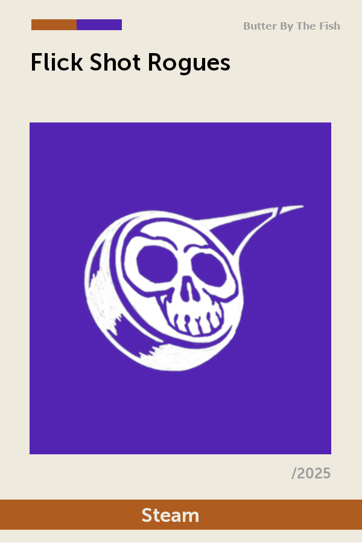

Flick Shot Rogues
Every archived year-end list appearance, including placement and points earned.
About the Game
Plan, Aim, Shoot! FLICK SHOT ROGUES is a super-satisfying roguelike dungeon crawler about lining up the perfect shot to send your hero spinning across the board.Trigger wickedly explosive combos and blast the battlefield apart, but don’t be hasty – a misfire could spell your doom! Death is not the end! Each new journey across the island will reshuffle the enemies and offer different rewards. Rise to the challenge and adapt your strategy accordingly! Collect powerful items, talents, and curses, each with unique and game-changing effects. Brave the risks of the curse and supercharge your run with game breaking interactions.
| Released | 2025-09-17 |
|---|---|
| Developer | Butter By The Fish |
| Publisher | Noodlecake |
| Genres | Strategy, Indie |
| Platforms | PC |
SingleplayerSteam AchievementsFull controller supportSteam CloudDifficultReplay ValueColorfulPhysicsRoguelikeTurn-Based StrategyRogueliteDungeon Crawler
Where to Buy
Game information provided by RAWG.
Points by Year
List History
| Year | Source | List | Placement | Points |
|---|---|---|---|---|
| 2025 | Forbes | The 20 Best Games Of 2025 | 16 | 3 |